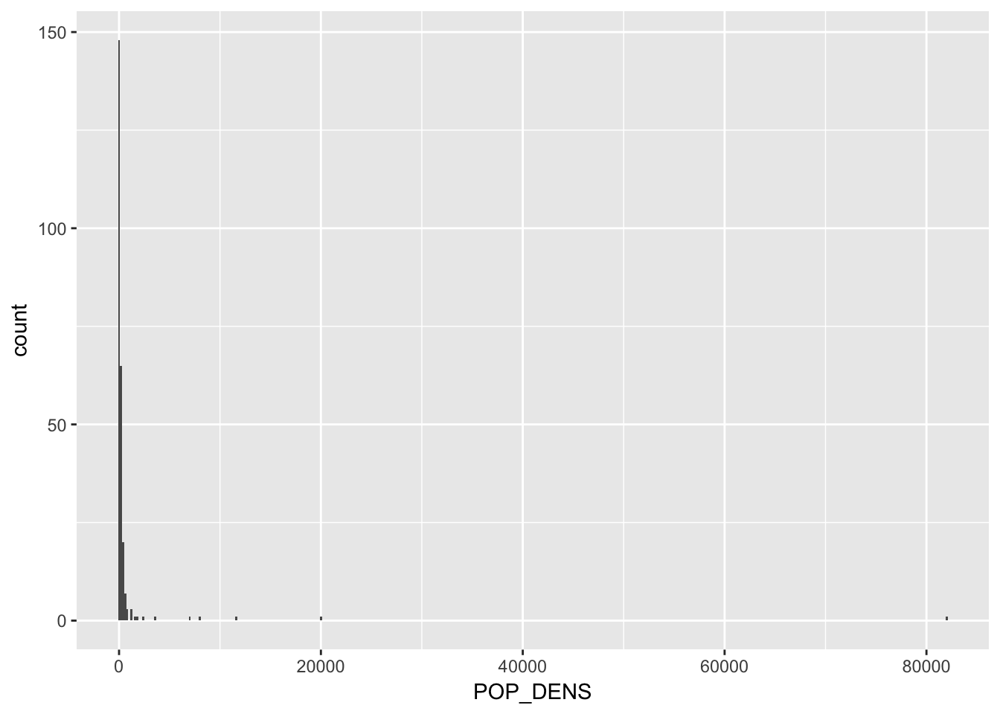
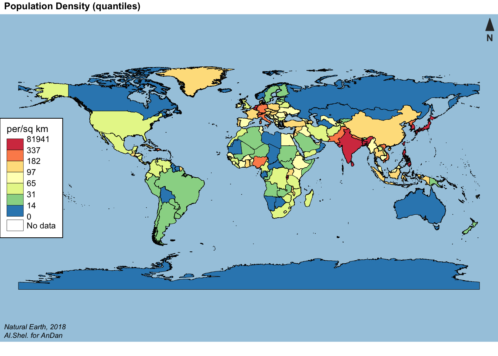

Часть 2. Векторные данные
Александр Шелудков
24 07 2018
Главные packeges для работы с пространственными данными в R: sp и raster. Они определяют классы объектов, с которыми работают все остальные пакеты.
library(sp)
library(raster)2.1. Классы векторных данных
Точки (points) - простейший вид векторных данных. Каждая точка имееи одну координатную пару (x, y).
Линия (line) - набор точек (узлов), соединенный в определенном порядке.
Полигон (polygon) - замкнутая линия: первая координатная пара является и последней.
В пакете sp им соответствуют различные объекты класса Spatial.
Что значит, что объект относится к классу?
Spatial* object можно представить в виде списка, слоты которого хранят свойства объекта (параметры, методы)
Давайте создадим объект класса SpatialPoints из 10 случайных точек. Для этого достаточно дать на вход соответствующей функции табличку с координатами
set.seed(12)
# Широта
latitude <- sample(-90:90, 10, replace = T)
# Долгота
longitude <- sample(-180:180, 10, replace = T)
lonlat <- cbind(longitude, latitude)
pts <- SpatialPoints(coords = lonlat)
# Посмотрим на структуру объекта
str(pts)## Formal class 'SpatialPoints' [package "sp"] with 3 slots
## ..@ coords : num [1:10, 1:2] -39 113 -45 -43 -85 -22 -15 15 60 -140 ...
## .. ..- attr(*, "dimnames")=List of 2
## .. .. ..$ : NULL
## .. .. ..$ : chr [1:2] "longitude" "latitude"
## ..@ bbox : num [1:2, 1:2] -140 -89 113 80
## .. ..- attr(*, "dimnames")=List of 2
## .. .. ..$ : chr [1:2] "longitude" "latitude"
## .. .. ..$ : chr [1:2] "min" "max"
## ..@ proj4string:Formal class 'CRS' [package "sp"] with 1 slot
## .. .. ..@ projargs: chr NAНичего не забыли? Нужно указать систему координат
# Set the coordinate reference system
WGS84 <- CRS('+proj=longlat +ellps=WGS84 +datum=WGS84 +no_defs')
pts <- SpatialPoints(coords = lonlat, proj4string = WGS84)
pts## class : SpatialPoints
## features : 10
## extent : -140, 113, -89, 80 (xmin, xmax, ymin, ymax)
## coord. ref. : +proj=longlat +ellps=WGS84 +datum=WGS84 +no_defs +towgs84=0,0,0Чтобы создать SpatialLines и SpatialPlygons воспользуемся функциями spLines() and spPlolygons() из пакета raster
lns <- spLines(lonlat, crs=WGS84) # линии
pols <- spPolygons(lonlat, crs=WGS84) # полигоны
lns## class : SpatialLines
## features : 1
## extent : -140, 113, -89, 80 (xmin, xmax, ymin, ymax)
## coord. ref. : +proj=longlat +ellps=WGS84 +datum=WGS84 +no_defs +towgs84=0,0,0pols## class : SpatialPolygons
## features : 1
## extent : -140, 113, -89, 80 (xmin, xmax, ymin, ymax)
## coord. ref. : +proj=longlat +ellps=WGS84 +datum=WGS84 +no_defs +towgs84=0,0,0Посмотрим, как это выглядит на карте
plot(pols, col = "#e5f5f9", axes = T) # plot polygon
plot(lns, col = "#99d8c9", add = T) # add lines
plot(pts, col = "#2ca25f", pch = 20, add = T) # add points
2.2. Атрибутивные данные
Spatial object = geometry + attributes
Данные, привязанные к пространственным объектам, называются атрибутами. Отдельные features мы рассматриваем как наблюдения, а число переменных не ограничено.
Давайте добавим нашим точкам атрибуты
# Создадим data.frame с данными
df <- data.frame(ID=1:nrow(lonlat), var=longitude^2/max(longitude)*10)
# Получилась вот такая табличечка
df# Соединяем геометрию и атрибуты
ptsdf <- SpatialPointsDataFrame(pts, df)
# Визуализируем
plot(pols, col = "#e5f5f9", axes = T) # plot polygon
plot(lns, col = "#99d8c9", add = T) # add lines
plot(ptsdf, col = "#2ca25f", pch = 20,
cex = log(ptsdf$var), # устанавливаем размер точек
add = T)
2.3. Чтение геоданных
Третий must-have пакет для работы с пространственными данными в R: rgdal. Это обертка для GDAL/OGR (Geospatial Data Abstraction Library) - открытой библиотеки, написанной на C и используемой во всех ключевых ГИС-программах (ArcGIS, QGIS, SAGA GIS и др.).
library(rgdal)Самые распространенные форматы геоданных - ESRI Shapefile и GeoJSON.
Загрузим данные об административно-территориальных границах проекта Natural Earth из файла в формате shapefile. Для этого используем функцию readOGR() из пакета rgdal.
countries <- readOGR(dsn = "data/world/world.shp", stringsAsFactors = F)## OGR data source with driver: ESRI Shapefile
## Source: "data/world/world.shp", layer: "world"
## with 255 features
## It has 11 fieldscountries## class : SpatialPolygonsDataFrame
## features : 255
## extent : -180, 180, -90, 83.6341 (xmin, xmax, ymin, ymax)
## coord. ref. : +proj=longlat +datum=WGS84 +no_defs +ellps=WGS84 +towgs84=0,0,0
## variables : 11
## names : SOVEREIGNT, TYPE, ADMIN, POP_THS, GDP_MD_EST, POP_YEAR, GDP_YEAR, ECONOMY, INCOME_GRP, ISO_A2, REGION_WB
## min values : Afghanistan, Country, Afghanistan, 0.000, 0.00, 0, 0, 1. Developed region: G7, 1. High income: OECD, -99, Antarctica
## max values : Zimbabwe, Sovereign country, Zimbabwe, 1379302.771, 21140000.00, 2017, 2016, 7. Least developed region, 5. Low income, ZW, Sub-Saharan Africaplot(countries)
В случае с shapefiles мы также можем использовать обертку для rgdal из пакета raster
# Alternatively
# countries <- shapefile("data/world/world.shp", stringsAsFactors = F)2.4. Картограммы
Какие данные хранит countries?
head(countries@data)POP_THS: численность наслеения, тыс. чел.
GDP_MD_EST: ВВП, млн $
На этом занятии наша задача - построить картограмму плотности населения по странам
Для работы с атрибутивными данными и визуализации понадобится еще несколько пакетов
library(dplyr)
library(ggplot2)
library(classInt)
library(RColorBrewer)
library(cartography)2.4.1 Изменение атрибутивных данных
Рассчитаем площадь стран с помощью функции area() из пакета raster
countries@data$AREA <- area(countries)/1000000 # км2
# Плотность населения по странам
countries@data %>%
mutate(POP_DENS = round(x = POP_THS*1000/AREA, digits = 2)) ->
countries@dataОтлично! Однако прежде чем строить саму карту, надо понять, на какие интервалы мы разобьем наблюдения, и выбрать цветовую палитру
2.4.2 Как разделить вектор на интервалы
Посмотрим на распределение данных
countries@data %>%
ggplot(aes(POP_DENS))+
geom_histogram(binwidth = 200) Есть выбросы, поэтому равные интервалы не подходят.
Функция classIntervals() из пакета classInt принимает на вход числовой вектор и возвращает границы интервалов в зависимости от выбранного метода: “fixed”, “sd”, “equal”, “pretty”, “quantile”, “kmeans”, “hclust”, “bclust”, “fisher” или “jenks”
# Я выбрал квантили
pop_den_ints <- classIntervals(var = countries@data$POP_DENS, n = 7, style = "quantile")
pop_den_ints## style: quantile
## [0,14.02286) [14.02286,30.75571) [30.75571,64.87429)
## 37 36 36
## [64.87429,96.94286) [96.94286,181.89) [181.89,337.2229)
## 37 36 36
## [337.2229,81941.48]
## 372.4.3 Цветовые палитры
В R есть встроенный набор цветовых схем, однако у картографов есть свои любимчики. Во-первых, это библиотека ColorBrewer и созданный на ее основе пакет RColorBrewer. Во-вторых, viridis - стандартный набор цветовых схем для карт в библиотеке matplotlib.
2.4.4 Строим картограмму (choropleth map) с помощью Cartography
Plot в cartography создается послойно. Сначала рисуем layout, затем основной слой, а сверху добавляем легенду. Для разных типов карт (Label Map, Сhoropleth Ьap, Proportional Symbols, Gridded Map и др.) в пакете есть отдельные функции. В случае с картограммами это choroLayer()
par(mar = c(1,0,1,0))
# Layout layer
layoutLayer(title = "Population Density (quantiles)", author = "Al.Shel. for AnDan",
sources = "Natural Earth, 2018", col = NA, frame = FALSE,
bg = "#A6CAE0",
scale = NULL, coltitle = "black", extent = countries)
# Основной слой
choroLayer(spdf = countries, # объект SpatialPolygonsDataFrame
var = "POP_DENS", # картографируемая переменная (столбец)
border = "grey1", lwd = 0.5, # цвет и толщина границ полигонов
breaks = pop_den_ints$brks, # границы интервалов
col = rev(brewer.pal(7, "Spectral")), # color palette
legend.pos = "n", # none - легенду отрисуем позже
add = T)
# Легенда
legendChoro(pos = "left", title.txt = "per/sq km",
values.cex = 0.7, breaks = pop_den_ints$brks, values.rnd = 0,
col = rev(brewer.pal(7, "Spectral")), frame = T, symbol = "box", nodata = T)
Посмотреть/почитать:
cartography Vignettes
2.5. Самостоятельная работа 1
Задание: с 2012 года CRAN ежедневно публикует анонимизированные данные о скачивании пакетов для R. Возьмите любой день (вчера? ваш день рождения? и т.д.) и проанализируйте, какие пакеты чаще всего качают пользователи и из каких они стран. Создайте карту, которая показывает территориальное распределение пользователей. Описание структуры данных вы найдете на странице cran-logs.
Подсказка: чтобы найти координаты центроида полигона, используйте coordinates() из пакета sp